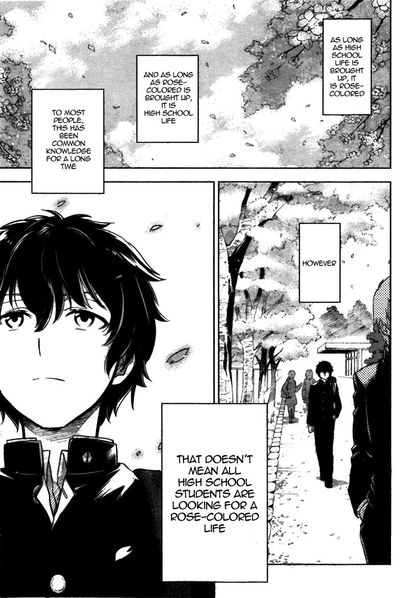

Hyouka
by Honobu Yonezawa
Synopsis
Houtarou Oreki is a high school student who prefers to conserve his energy and avoid unnecessary activities. At his older sister's request, he joins the Classic Literature Club, where he meets the curious Eru Chitanda, along with his friends Satoshi Fukube and Mayaka Ibara. Together, they investigate everyday mysteries, uncover hidden truths, and discover that even ordinary school life can hold unexpected secrets.
Chapter 1

Houtarou Oreki plans to live a quiet high school life by avoiding anything that wastes his energy. However, at his older sister's request, he joins the Classic Literature Club and meets Eru Chitanda, a bright and curious girl who is fascinated by even the smallest mysteries.
When Chitanda becomes determined to understand a puzzling incident connected to her past, Oreki reluctantly puts his sharp observation skills to work. What begins as a simple question draws him into a mystery that challenges his usual habit of taking the easiest path.
— End of chapter —